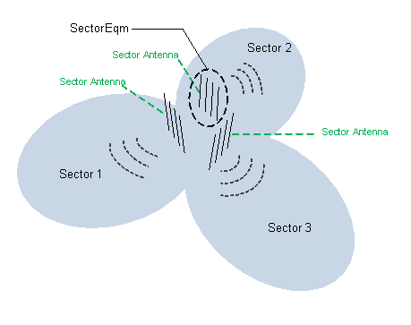
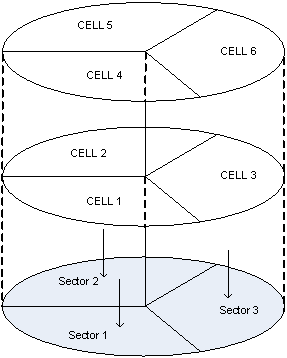

This section describes the functions and concepts of sectors. It also illustrates managed object models (MOMs) and describes the corresponding managed objects (MOs).
Sector
A sector is the smallest radio coverage area. Users can specify the name or location of a sector.
A sector is an area covered by radio signals emitted by a set of radio frequency (RF) antennas with the same coverage. A sector is not RAT-specific. Therefore, within a sector, services can be provided for multiple RATs.
Sector equipment
Sector equipment is a set of RF antennas that can transmit or receive signals. This set of antennas belongs to the same sector. Sector equipment serves one or more cells. You can allocate a set of RF antennas to specific sector equipment by specifying the sector equipment number. In this way, services of a cell served by RF antennas are established in the sector that is served by the sector equipment.
The RX/TX mode of a cell is determined by the number of antennas contained in its sector equipment and RX/TX mode of the antennas. For example, if a cell works in 4T4R mode, there are four antennas obtained in the sector equipment and these antennas all work in TX and RX model.


Figure 3 is a subset of the eNodeB MOM and it shows sector-related MOs.
The sector-related MOs are described as follows: